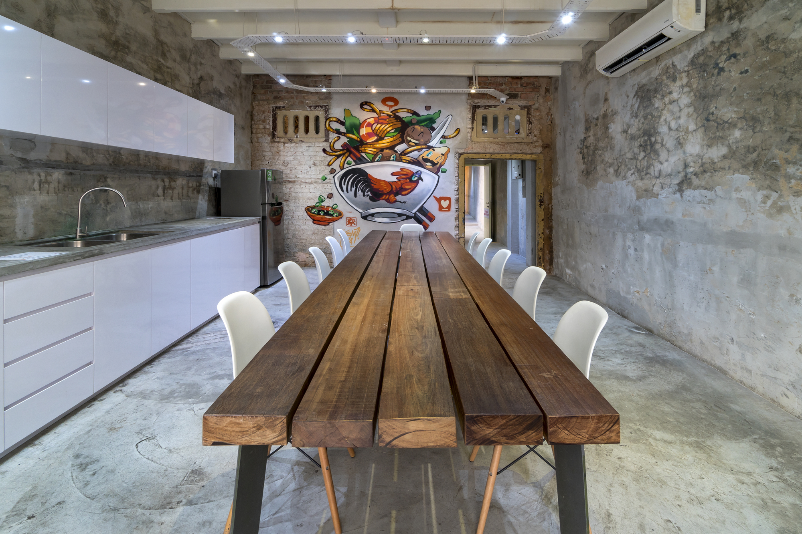
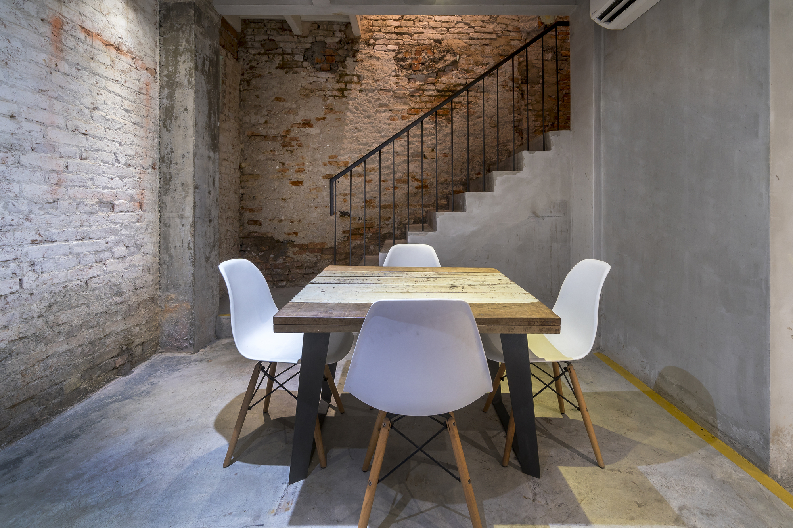
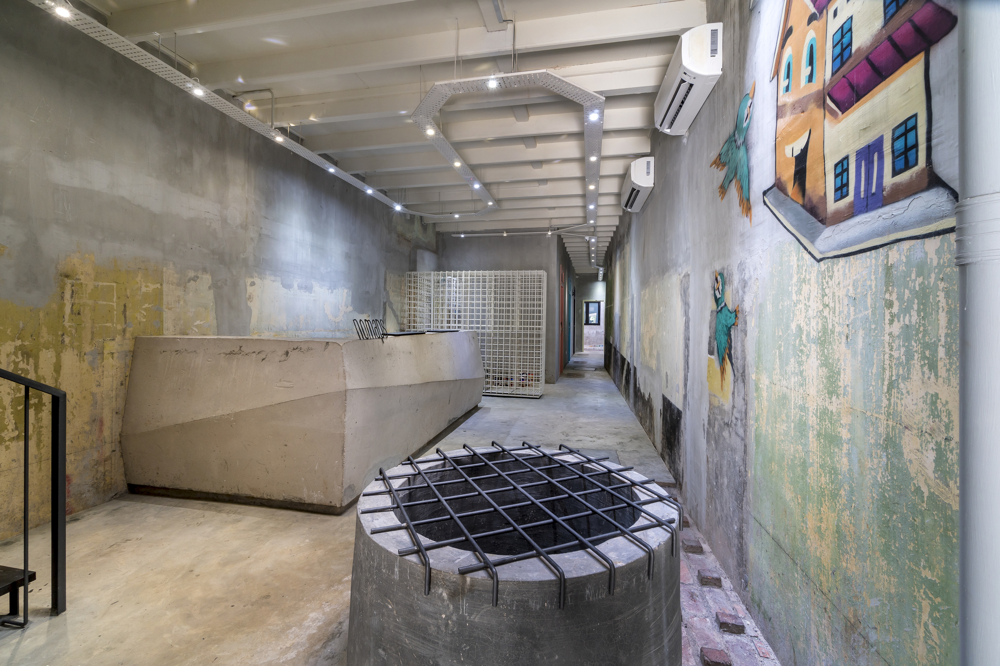
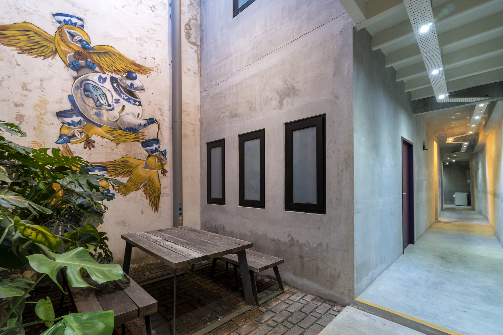

DRTAN LM Architect
Nomaps is a flash-packer hostel re-crafted from an old double storey pre-war shop-house situated in the heart of Malacca’s UNESCO World Heritage Site.
Designed for the adventurer, Nomaps provides an opportunity to transform a piece of history into a contemporary piece of art for the senses. Efforts were made to preserve the character of the existing building interspersed with new architectural interventions.
This transformation is not just superficial mimicry to restore old glory, but rather is metamorphic to address modern day needs. The new contemporary DNA can be defined as light and airy, simple yet complicated, fun and lively.
The refurbishment brief for the old pre-war building demanded the creation of a new and easily recognizable spatial identity. Key elements comprise the off-form concrete reception counter, juxtaposed with old water-well at the lobby, new bathrooms with pendulous vintage lights, and a large trestle timber table made from re-used old floor joist at the dining hall, the 170 feet long meandering hallway with patinaed walls that offer an adventure in art and design.
The building is ventilated by 3 air-wells, hence minimal mechanical air conditioning is required. The roof is reconstructed using terracotta Marseille and V-Tile profiles which were the original tiles used in the 18th century houses. The party walls were preserved in its original form with the old layers of plaster and patina exposed, whereby each layer represents a piece of history of the former house.
The traditional rear façade brise soleil is made from modernised Malaccan vintage window frames. The vivid colored frames are arranged to illustrate a contrasting giant art piece where modernity and vintage converge.
The project coordinated the design of all interior elements including furniture, light fittings, artworks & murals. With a modest budget existing materials were re-used to rejuvenate the interior while preserving the core values of the former house. A brickwork collage becomes feature wall at one of the courtyards which is a now a favorite chill-out section for guests.
Nomaps is a hidden gem where the old and new merges in a tight series of interior-scapes.